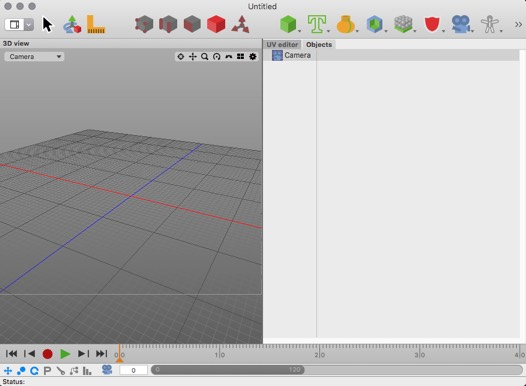

Window Layout Manager
This section explains who the window layout of Cheetah3D can be easily modified to meet your needs. You can set up a window layout for modelling and one for animation for example.
Switching between different window layouts can be done either with the "window layout" pull down button in the toolbar or with the "Window->Layout->..." menu command.
To build a custom layout we first chose the "Custom Layout 1" window layout from the "window layout" pull down button in the toolbar. A big 3D view should appear.
Now make a "ctrl + click" into the titlebar of the 3D view. A context menu opens which offers the possibility to split the view horizontally or vertically. We chose vertically in this example.

After performing the "Split vertical" command the 3D view will be split into two views. Now it's time to change the view type. Make once again a "ctrl + click" into the titlebar of the right view. But now we chose the "UV editor" menu item.
Now the right 3D view has been changed into a "UV editor" view. You can now split the newly created "UV Editor" view again and so on. But we could also create a tab view. To do that make a "ctrl + click" into the titlebar of the "UV Editor" view and select "Add Tab" from the menu.

The "UV Editor" tile bar turned into a tab view. Changing the content views of the tab view can be done as before.

Once you are done you have to use the "Save Layout" command from the "window layout" pull down button to save your new layout.